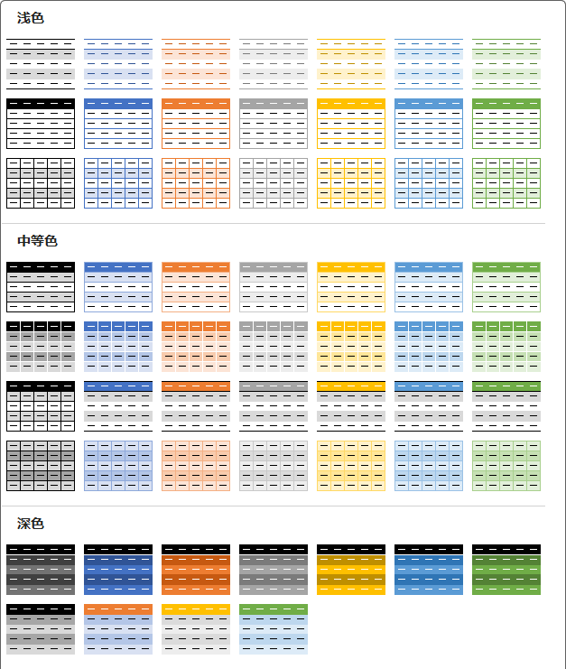

Table
看群里有人求表格样式，我觉得这好像是非常简单的事情，然后决定弄一下，然后就弄了整整一天，就是把 Excel 自带的样式都给复刻了一遍。

使用方法
以下任选其一即可：
CSS 片段
将 CSS 代码（后面会讲如何获取）放到 .obsidian/snippets 文件夹下，在 设置——外观——CSS代码片段 中启用，此方法全局生效。但只能选择一种样式使用。
Dataview 视图 + Callouts
在需要使用此样式的笔记中插入如下代码段，代码段的语言设置为 dataviewjs（文档中为避免被错误的执行，均写为 js）
dv.view('Table'， {mode: 'callouts', style: 'Light-1-1'})然后像这样在 Callouts 中插入表格即可，注意：Callouts 的类型和上面的 style 的值应该对应。
> [!Table-Light-1-1]
>
> | 表格示例 | 第一列 | 第二列 |
> | :------: | :--------: | :--------: |
> | 第一行 | 一二三四五 | 可爱稻米鼠 |
> | 第二行 | 六七八九十 | 快给他投食 |
> | 第三行 | 喵喵喵喵喵 | 鼠鼠要撒娇 |参数说明
Dataview 视图的属性和取值说明：
style： 样式名称，按照上面图片，分为三组：Light、Normal、Dark，然后每组里的第几行，第几个，这样组合下来就成了Light-1-1的名称；mode：输出类型：- 默认，即不书写此属性，直接插入需要的样式，对所有表格生效（需要此段 dataview 代码处于加载状态）；
callouts：即上面示例方法，这样使用的好处是可以在一篇笔记中使用多个表格样式；examples：输出所有表格样式，以供参考、选择，所以样式编号并不需要记忆；getStyle：获取指定样式的 CSS 代码，可以复制之后加入 CSS 片段中，全局生效；
title：在callouts模式下是否显示标题，默认是不显示 Callouts 的标题，如果设置为 1，则显示 Callouts 标题
样式修正
一些主题对表格样式有修改，需要自己写代码补偿回来。
我自己用 Minimal 主题，所以目录下有一份 FixMinimal.css 样式片段，如果你也使用此主题，可以将此内容加入 CSS 片段中。